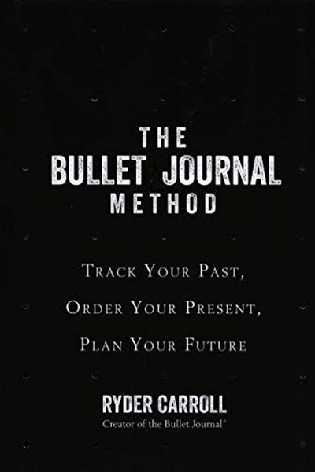

Library › Productivity
The Bullet Journal Method — Summary & Key Lessons

Track the past, order the present, design the future — the analog system that organizes your life.
📖 OPEN THE FULL INTERACTIVE BREAKDOWN →🌐 Read it in Hindi, Hinglish, Gujarati, Tamil & 22 more languages — free, with audio.
💡 The Big Idea
Ryder Carroll designed the Bullet Journal to solve a modern problem: scattered notes, apps and tasks that overwhelm instead of organize. The system is simple: a single notebook, rapid logging (short bullets for tasks, events and notes), collections (lists for projects), and the Index. Its power isn't the method — it's the reflection: monthly migration forces you to ask what matters and what to drop. It's mindfulness disguised as a to-do list.
🧠 The 6 Key Lessons
Lesson 1: Rapid Logging: Capture Fast, Think Later
The System
The core of the Bullet Journal is rapid logging: short, bulleted notes you write in seconds. Tasks get a dot (•), events a circle (○), notes a dash (–). You capture everything in the moment — and sort it later. Rapid logging removes the friction between thought and capture.
📖 Example: Instead of a full sentence, you write '• call dentist'. A meeting becomes '○ review Tuesday'. The system captures the moment in seconds and keeps the page usable. Read the full example →
⚡ Do this: For one day, log everything in short bullets: tasks with dots, events with circles, notes with dashes. See how much lighter it feels.
Lesson 2: The Index and Collections
The System
The Index (a table of contents) and collections (dedicated lists for projects, ideas, books) keep your notebook organized. Any topic becomes a collection: 'Books to Read', 'Trip Planning', 'Monthly Goals'. The Index tells you where everything lives.
📖 Example: Your daily log pages are numbered; collections get their own pages and are added to the index. Months later, you can find 'that idea from February' in seconds. Read the full example →
⚡ Do this: Start your notebook: number the first pages, create an Index, and open one collection for your current main project.
Lesson 3: The Monthly Log: Zoom Out
The System
Each month gets two pages: a calendar (dates and events) and a task page. At month's start, migrate what matters from last month; at month's end, review. The monthly log is the beat of the system — a regular chance to see the whole month, not just today.
📖 Example: At the end of each month, Carroll's users review what they wrote: what got done, what matters, what should be let go. This pause is where the system creates clarity. Read the full example →
⚡ Do this: Set up your monthly log for this month — calendar + task page. In 30 days, do the review honestly.
Lesson 4: Migration: The Mindful Purge
Migration
Migration is the ritual of reviewing old tasks and deciding: do it now, schedule it, or drop it. Unfinished tasks get moved forward — visibly — and the act of moving them forces you to ask 'does this still matter?' Tasks that keep migrating are clues about what you actually value.
📖 Example: A task that has migrated five months in a row isn't important — it's guilt. Migration surfaces that guilt and lets you cut it consciously. Read the full example →
⚡ Do this: At your next monthly review, read every old task. Move what matters, schedule what's real, and deliberately drop the rest.
Lesson 5: Mindfulness Through a Notebook
The Practice
The method's deeper purpose: slow down, reflect, and choose intentionally. The Bullet Journal creates a space between your life and your reaction to it — the page is that pause. Regular reflection turns the notebook into a conversation with yourself.
📖 Example: Carroll developed the system while struggling with attention issues as a student — the notebook gave him a way to offload and reflect that apps couldn't provide. Read the full example →
⚡ Do this: At the end of each day, spend 2 minutes reading today's log. Ask: what mattered, and what would I do differently?
Lesson 6: Start Small, Build the Habit
The Practice
Don't overhaul your life at once. Start with one notebook, the daily log, and the index. Build the habit for a few weeks before adding collections and migrations. The system is modular — add what serves you, skip what doesn't.
📖 Example: Carroll advises beginners to keep it minimal for the first month: daily logging only. Once the habit sticks, the structure grows with you. Read the full example →
⚡ Do this: Start today with the minimum: one notebook, daily rapid logs, page numbers. Add collections only after two weeks.
✅ 5-Step Action Plan
- Set up your notebook: Index, page numbers, daily log.
- Rapid-log everything for one day — tasks, events, notes.
- Create one collection for your main project.
- Do a monthly migration — and drop what doesn't matter.
- End each day with 2 minutes of reflection on today's log.
💬 Best Quotes from The Bullet Journal Method
- “The Bullet Journal is a method of mindfulness disguised as a productivity system.”
- “It's not about being more productive — it's about doing the right things.”
- “We spend our days swimming in a sea of information, drowning in it. The Bullet Journal is a life raft.”
Interactive version: mark lessons as read, listen in your language, share quote cards.